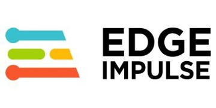

STM32Cube.AI

STM32Cube.AI — это программный пакет от STMicroelectronics, интегрированный в экосистему STM32Cube. Он позволяет автоматически преобразовывать предварительно обученные нейронные сети из популярных фреймворков (таких как TensorFlow Lite, Keras, ONNX) в оптимизированный код для микроконтроллеров STM32. Инструмент анализирует модель, квантует веса и генерирует C-код, который можно напрямую интегрировать в проекты для STM32. Это решение упрощает развёртывание моделей на аппаратной платформе ST, обеспечивая высокую производительность и эффективное использование памяти.
Перейти на официальный сайт Назад к фреймворкам